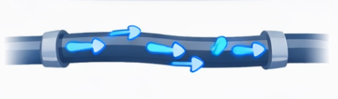
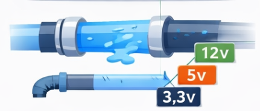
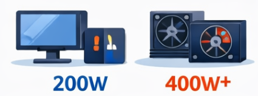
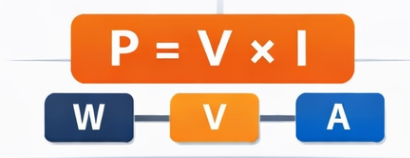
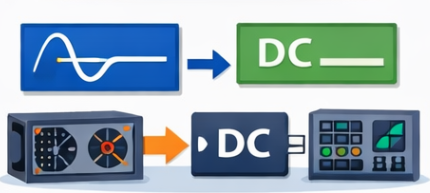
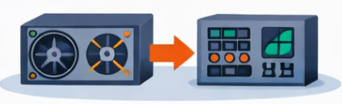

Fundamentos de Eletricidade Aplicados ao Computador
📘 Aula 01 — Conceitos essenciais para entender o funcionamento elétrico de computadores
1. INTRODUÇÃO E CONTEXTUALIZAÇÃO
Por que entender eletricidade?
Todo computador depende de energia elétrica para funcionar. Sem energia adequada, ele pode:
- Não ligar
- Reiniciar sozinho
- Travar
- Sofrer danos permanentes
Por isso, antes de aprender a montar ou configurar um computador, é essencial entender:
Como a eletricidade funciona e como ela alimenta os componentes.
Nesta aula, o objetivo é compreender os conceitos básicos que explicam o funcionamento elétrico de um computador.
2. O QUE É ELETRICIDADE


A eletricidade pode ser entendida, de forma simplificada, como:
O movimento de elétrons através de um condutor (como um fio).
Esse movimento transporta energia, que será utilizada pelos dispositivos eletrônicos.
No computador:
- Essa energia alimenta o processador, memória, armazenamento e demais componentes.
3. TENSÃO ELÉTRICA (VOLTAGEM)

A tensão elétrica representa a "força" que empurra os elétrons.
Definição: diferença de potencial elétrico entre dois pontos.
Unidade: Volt (V)
🔧 Exemplos práticos:
- Tomadas residenciais: 127V ou 220V
- Fonte do computador:
- 12V → componentes de maior consumo
- 5V → circuitos intermediários
- 3,3V → componentes sensíveis
💡 Interpretação:
A tensão é como a pressão da água em um cano.
4. CORRENTE ELÉTRICA
A corrente elétrica representa o fluxo de elétrons.
Definição: quantidade de elétrons que passa por um ponto do circuito.
Unidade: Ampère (A)
💡 Interpretação:
Se a tensão é a pressão, a corrente é a quantidade de água fluindo.
🔧 Aplicação:
- Quanto maior o consumo de um componente, maior a corrente necessária.
- Processadores e placas de vídeo exigem mais corrente.
5. POTÊNCIA ELÉTRICA

A potência indica a quantidade de energia consumida ou fornecida.
Definição: taxa de consumo de energia elétrica
Unidade: Watt (W)
💡 Interpretação:
Potência = "quantidade total de energia sendo utilizada"
🔧 Exemplos:
- Computador simples: ~200W
- Computador com placa de vídeo: 400W ou mais
6. RELAÇÃO ENTRE TENSÃO, CORRENTE E POTÊNCIA

Essas três grandezas estão diretamente relacionadas:
Onde: P = potência (W) | V = tensão (V) | I = corrente (A)
🔧 Interpretação prática:
- Se um componente precisa de mais potência:
- Ele pode exigir mais corrente
- Ou operar em uma tensão específica
👉 Isso é essencial para entender dimensionamento de fontes.
7. TIPOS DE CORRENTE ELÉTRICA

⚡ Corrente Alternada (AC)
- Utilizada na rede elétrica
- A energia muda de direção constantemente
- Exemplo: tomada da parede
🔋 Corrente Contínua (DC)
- Fluxo em uma única direção
- Utilizada por dispositivos eletrônicos
🔧 Aplicação no computador:
- A energia chega em AC
- O computador funciona em DC
8. CONVERSÃO DE ENERGIA (INTRODUÇÃO À FONTE)

A fonte de alimentação tem uma função essencial:
Converter corrente alternada (AC) em corrente contínua (DC).
Além disso, ela:
- Reduz a tensão (de 127V/220V para valores menores)
- Distribui energia para os componentes
👉 Sem essa conversão, o computador não funcionaria corretamente.
9. SEGURANÇA ELÉTRICA BÁSICA
Trabalhar com eletricidade exige atenção.
⚠️ Riscos:
- Choque elétrico
- Queima de componentes
- Incêndio
✅ Boas práticas:
- Nunca abrir equipamentos energizados
- Utilizar cabos adequados
- Evitar fontes de baixa qualidade
- Desligar da tomada antes de manusear
10. APLICAÇÃO PRÁTICA E REFLEXÃO
Considere as situações:
- Um computador que reinicia sozinho
- Um equipamento que não liga
- Uso de uma fonte genérica em um sistema mais exigente
🧠 Perguntas para reflexão:
- A fonte fornece energia suficiente?
- A tensão está correta?
- Há sobrecarga de corrente?
SÍNTESE DA AULA
O que você aprendeu
- A eletricidade é essencial para o funcionamento do computador
- Tensão, corrente e potência são grandezas fundamentais
- Existe diferença entre corrente AC e DC
- A fonte de alimentação realiza a conversão e distribuição de energia
- Problemas elétricos podem causar falhas no sistema